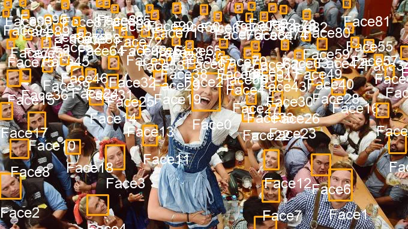

pre:Invent — catching up on the latest Machine Learning announcements
AWS re:Invent is hours away. As you can imagine, plenty of new services and features will be announced in the next few days. Before the floodgates are opened, let’s take a look at some of our recent Machine Learning announcements.
Amazon Rekognition
The image and video analysis service is constantly improved. The latest upgrade makes it even more efficient at detecting faces, even in difficult situations (rotation, poor lighting, partly hidden faces, etc.). Here’s a quick example with one of my refence pictures: 96 faces have been detected.

Amazon Polly
Several new voices have been added to the text-to-speech service:
- ‘Bianca’, a new female voice for Italian,
- ‘Lucia’, a new female voice for Castillian Spanish,
- ‘Mia’, a new female voice for Mexican Spanish.
Amazon Polly now supports 57 voices in 28 languages.
Amazon Transcribe
The speech-to-text service now support real-time transcription! You’ll find a sample Java application in this Github repository. Here’s a quick demo.
Amazon Translate
The translation service just added 8 new languages: Danish, Dutch, Finnish, Hebrew, Indonesian, Korean, Polish, and Swedish. This brings the total of supported languages to 21, and the total of language pairs to 417. You can view the full list in the documentation.
$ aws translate translate-text --source-language-code auto --text "I can now speak 21 different languages" --target-language-code ru
{
"TranslatedText": "Теперь я могу говорить на 21 разных языках",
"SourceLanguageCode": "en",
"TargetLanguageCode": "ru"
}
$ aws translate translate-text --source-language-code auto --text "Теперь я могу говорить на 21 разных языках" --target-language-code he
{
"TranslatedText": "עכשיו אני יכול לדבר 21 שפות שונות",
"SourceLanguageCode": "ru",
"TargetLanguageCode": "he"
}
$ aws translate translate-text --source-language-code auto --text "עכשיו אני יכול לדבר 21 שפות שונות" --target-language-code fr
{
"TranslatedText": "Maintenant, je peux parler 21 langues différentes",
"SourceLanguageCode": "he",
"TargetLanguageCode": "fr"
}
Amazon Comprehend
The natural language processing service now supports two custom features:
- The ability to extract custom entities.
- The ability to build custom document classifiers.
Traditionally, both techniques would require Machine Learning expertise in order to use advanced algorithms. Here, all you have to do is bring your own labelled data in CSV files, and Comprehend will train a model for you. No expertise required, no infrastructure to deal with.
Amazon SageMaker
The Machine Learning service has received quite a few updates recently.
Infrastructure features
- Batch transform can now run inside a VPC.
- All SageMaker APIs, including notebook instances, now support AWS Private Link. This guarantees that all traffic stays inside your VPC, without even going through the public Internet.
- SageMaker is now integrated with Apache Airflow, a workflow management system. Using Airflow, you can build a workflow for SageMaker training, hyperparameter tuning, batch transform and endpoint deployment. You can use any SageMaker Deep Learning framework or Amazon algorithms to perform these operations in Airflow. Here’s an example.
Algorithm features
- Training metrics (loss, accuracy, etc.) are now visible in Amazon CloudWatch. You can also query them using the SageMaker SDK.
- The TensorFlow built-in container now supports TensorFlow 1.11. You can now also write your script using Python 3.
- Automatic Model Tuning now support warm starts, i.e. you can start a new tuning job based on the results of a previous one. This way, you can keep exploring the same parameter space without tuning from scratch again.
- Two new built-in algorithms have been added recently: Object2vec, a general-purpose embedding algorithm, and IP Insights, an unsupervised learning algorithm that learns the usage patterns for IPv4 addresses. This brings the total number of built-in algorithms to sixteen.
Pfew. pre:Invent was quite busy this year :) I’m afraid this is nothing compared to what’s coming in the next few days 😱
I’ll keep you posted, of course. For live coverage, please follow me on Twitter.
Lightning’s gonna strike alright 🤘